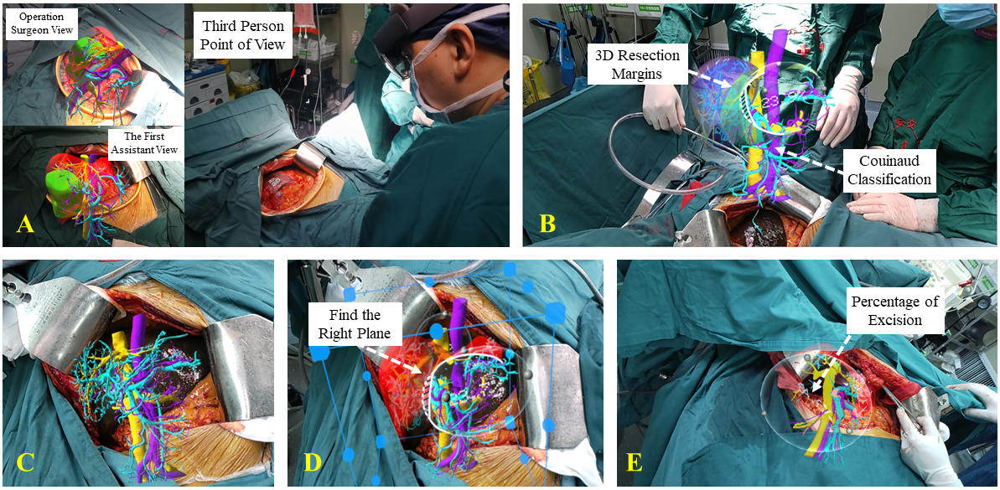

|
Zheng Han (韩政)
About Me
I am a graduate student at Xidian University, under the supervision of Fuzheng Yang and Jiarun Song. I received my B.S. degree from the Xidian University of Telecommunications Engineering in 2020.
My research interests are in computer vision, virtual and mixed reality, and light field imaging. Currently, I am doing research on deep learning, focusing on the compression and transmission of 3D face videos.
Research
Current Works
Education
M.S., Communication and Information Engineering, Xidian University, 08/2020 - Present
B.S., The Class of Excellent Engineer，Telecommunications Engineering, Xidian University, 09/2016 - 06/2020
Projects
|

|
Real-Time Mixed Reality Guidance in Hepatectomy: Perform Simple, Clean, and Fast Surgery
Conventional hepatectomy faces many challenges.
Specifically, the structure of liver blood vessels is complex, and intraoperative emergencies are common.
More seriously, excess resections have a negative impact on the postoperative liver function in patients, causing postoperative complications that impede patients’ recovery.
All of these factors pose great challenges for surgeons to perform a safe hepatectomy.
To tackle these problems, I developed the first interactive mixed reality operation-supportive system.
This system provides real-time visualization of surgical anatomy to guide the implementation of resection plans, ultimately helping surgeons perform simple, clean, and fast surgery.
[Project Page]
|

|
Keypoint-Driven Neural Head Avatars
Compared with 2D displays, 3D displays can provide a more immersive visual experience for users.
However, as the information carrier for 3D displays, 3D models face the challenge of an excessively large data volume.
This issue will lead to excessive network transmission overhead when transmitting 3D models, ultimately hindering the commercialization of 3D imaging technology.
Focusing on video conference scenarios, we are investigating a 3D facial video compression and transmission scheme based on self-supervised learning, aimed at tackling the aforementioned issues.
[Project Page]
|

|
Open the Anywhere Door: Characters Transfer in Mixed Reality
Video chats in the future will not stay on a two-dimensional screen.
The best way to foresee the future is to make it.
We developed a 3D live broadcast system in mixed reality, aiming to bring people a fully immersive experience in video chat.
[Project Page]
|

|
Visual Switching Technology Based on Viewpoint Tracking
Wearing a virtual reality head-mounted display for a long time will cause serious visual fatigue, even dizziness and nausea, which penalizes the quality of experience for users.
One of the main causes of this problem is the accommodation-vergence conflict (AVC).
However, the rendering methods used in the current virtual reality system can not effectively alleviate the AVC effect.
To solve this problem, we propose a dynamic depth-of-field rendering algorithm.
Taking into account the visual perception characteristics of human eyes, our method dynamically renders a scene into a picture that is closer to what people can perceive naturally.
[Project Page]
|
|